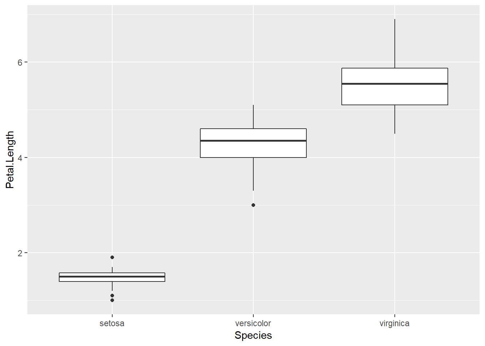

Dans ce laboratoire, vous appliquerez les concepts vus lors des deux derniers cours.
Pour cet exercice, nous utiliserons le célèbre jeu de données des iris d’Edgar Anderson, qui contient différentes mesures prises sur 50 fleurs de 3 espèces d’iris. Ce tableau de données est déjà chargé dans R sous le nom iris.
head(iris)## Sepal.Length Sepal.Width Petal.Length Petal.Width Species
## 1 5.1 3.5 1.4 0.2 setosa
## 2 4.9 3.0 1.4 0.2 setosa
## 3 4.7 3.2 1.3 0.2 setosa
## 4 4.6 3.1 1.5 0.2 setosa
## 5 5.0 3.6 1.4 0.2 setosa
## 6 5.4 3.9 1.7 0.4 setosaSepal.Length et Sepal.Width), en différenciant les points de chaque espèce par couleur.Comment procéderiez-vous pour calculer la moyenne de Sepal.Width et son intervalle de confiance à 95% par espèce?
De quelles quantités avez-vous besoin pour ce calcul?
En utlisant le package dplyr, calculez la moyenne, le taille de l’échantillon, l’écart-type et l’erreur-type de la moyenne de Sepal.Width pour chaque espèce (Species). Sauvegardez le résultat dans un tableau de données iris_stat.
Durant le cours sur les distributions statistiques, nous avons vu les fonctions rnorm, dnorm, pnorm et qnorm qui permettent de calculer des valeurs à partir de la distribution normale. Des fonctions similaires existent pour la distribution \(t\) (rt, dt, pt, qt). Utilisons la fonction qt(p, df) pour déterminer l’intervalle correspondant à 95% de la probabilité. Quelles valeurs de \(p\) (la probabilité cumulative) utiliser? Quel nombre de degrés de liberté (\(df\)) en fonction de la taille de l’échantillon \(n\)?
Créez deux nouvelles colonnes dans iris_stat contenant le minimum ic_min et le maximum ic_max de l’intervalle de confiance. Définissez ces colonnes en fonction de la moyenne, de l’erreur-type et de \(n\).
Finalement, utilisez le type de graphique geom_pointrange (intervalle de points) de ggplot2 pour visualiser l’intervalle de confiance pour chaque espèce. Ce type de graphique demande la spécification de y (point central), ymin (minimum de l’intervalle) et ymax (maximum de l’intervalle) dans la fonction aes.
En vous basant sur le code écrit au dernier exercice, produisez un graphique du DHP moyen avec l’intervalle de confiance à 95% pour toutes les espèces dans le tableau de données du fichier cours1_kejimkujik.csv. Ensuite, à partir des données et du graphique, répondez aux questions suivantes.
Quel est l’intervalle de confiance du DHP moyen pour le pin blanc (PIST)? En supposant que les individus échantillonés sont représentatifs de la population sur ce site, comment interprétez-vous cet intervalle?
Si l’échantillon est représentatif de chaque espèce, peut-on déterminer facilement quelle espèce possède le plus petit DHP moyen, ou laquelle possède le plus grand DHP moyen, dans cette population?
Nous alons comparer graphiquement les propriétés de la distribution t et de la distribution normale centrée réduite.
Créez un tableau de données tab1 avec une seule colonne, x qui contient toutes les valeurs entre -3 et 3, à intervalles de 0.1.
Ajoutez une colonne z qui contient la valeur de la densité d’une distribution normale centrée réduite pour chaque valeur de x. Si vous n’êtes pas certain de la fonction R permettant d’obtenir la densité d’une variable normale, utiliser la commande d’aide ?Normal.
Ajoutez une deuxième colonne t9 qui contient la valeur de densité pour la distribution t avec 9 degrés de liberté.
Créez un graphique de z vs. x avec geom_line, et assignez-le à un objet dans R.
Ajoutez au graphique déjà produit une courbe de couleur différente pour t9. Vous pouvez ajouter une ligne où y est associée à une variable différente de la façon suivante: [nom du graphique sauvegardé] + geom_line(aes(y = t9), color = "blue").
Utilisez rt pour produire un échantillon de 100 valeurs de la distribution t à 9 degrés de liberté, puis comparez ce vecteur à une distribution normale avec un graphique quantile-quantile.
Si l’on prenait un intervalle contenant 80% de la probabilité pour chacune des deux distributions (z et t9), lequel des intervalles serait le plus large? Tentez de déduire la réponse à partir des graphiques obtenus en e) et f), puis vérifiez en calculant les quantiles correspondants à l’intervalle de 80%.
Vous souhaitez déterminer la moyenne et l’écart-type du taux de croissance des semis de bouleau jaune dans une région donnée. Votre unité d’échantillonnage est un quadrat de 1 m\(^2\) où la croissance annuelle des semis est mesurée. Quelle méthode d’échantilonnage préconiserez-vous pour le placement de ces quadrats selon les différents scénarios présentés, et pourquoi? Vous pouvez choisir un échantilonnage stratifié, par grappe, systématique, ou adaptatif.
Les peuplements de cette espèce dans la région sont relativement semblables mais très éloignés l’un de l’autre.
La croissance pourrait être fortement influencée par le gradient de température nord-sud à l’échelle considérée.
L’espèce se retrouve dans plusieurs types de peuplement distincts couvrant des proportions différentes du territoire (ex.: 70% type A, 25% type B, 5% type C).
C’est une espèce rare dans la région et sa distibution est peu connue.
Pour cet exercice, nous comparerons l’échantillonnage simple et stratifié à partir d’échantillons simulés du tableau de données iris. Voici la distribution des 50 longueurs de pétales pour chaque espèce dans le tableau de données original.
ggplot(iris, aes(x = Species, y = Petal.Length)) +
geom_boxplot()
Dans dplyr, la fonction sample_n(tab, n) retourne un tableau de données contenant n observations choisies au hasard du tableau tab. On peut aussi l’utiliser avec group_by pour choisir n observations par groupe.
iris_alea et iris_strat. La première fonction choisit 30 observations au hasard d’iris, puis retourne la moyenne de Petal.Length pour ces observations. La deuxième choisit 10 observations au hasard de chacune des trois espèces, plus retourne la moyenne de Petal.Length (globale, pas par espèce). Assurez-vous que chacune des deux fonctions retourne un vecteur de longueur 1.Note: Vous pouvez écrire ces fonctions sans arguments (parenthèses vides après function), comme dans l’exemple ci-dessous.
iris_alea <- function() {
# Insérer code de la fonction ici
}replicate, comme suit:rep_alea <- replicate(1000, iris_alea())
rep_strat <- replicate(1000, iris_strat())rep_alea et rep_strat). Avant de faire le calcul, pouvez-vous deviner quelle méthode sera la plus précise? Pour quelle raison?